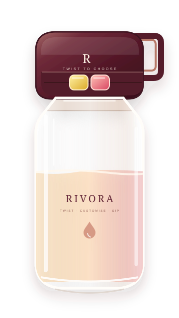

Make it personal
Choose a flavour to suit the moment, or mix your own combination.
A LITTLE IDEA WITH ROOM TO GROW
Why carry a few different drinks when one reusable bottle can give you a choice?

THE IDEA BEHIND RIVORA
RIVORA is a hydration concept built around one simple thought: the everyday bottle should give you more choice. A reusable bottle and a dual-flavour twist cap let you decide when and which flavour goes into your water.
It’s a work-in-progress idea for people on the move—students, gym-goers, travellers and anyone who wants a little more personality in their water.
A concept brought to life by Deeva Jain
WHAT WE’RE BUILDING TOWARDS
Choose a flavour to suit the moment, or mix your own combination.
A twist, a shake and a bottle that’s ready to go.
One bottle made to come along for the everyday, again and again.
This website presents a concept, not a finished commercial product. We’re exploring what RIVORA could become.
Say hello